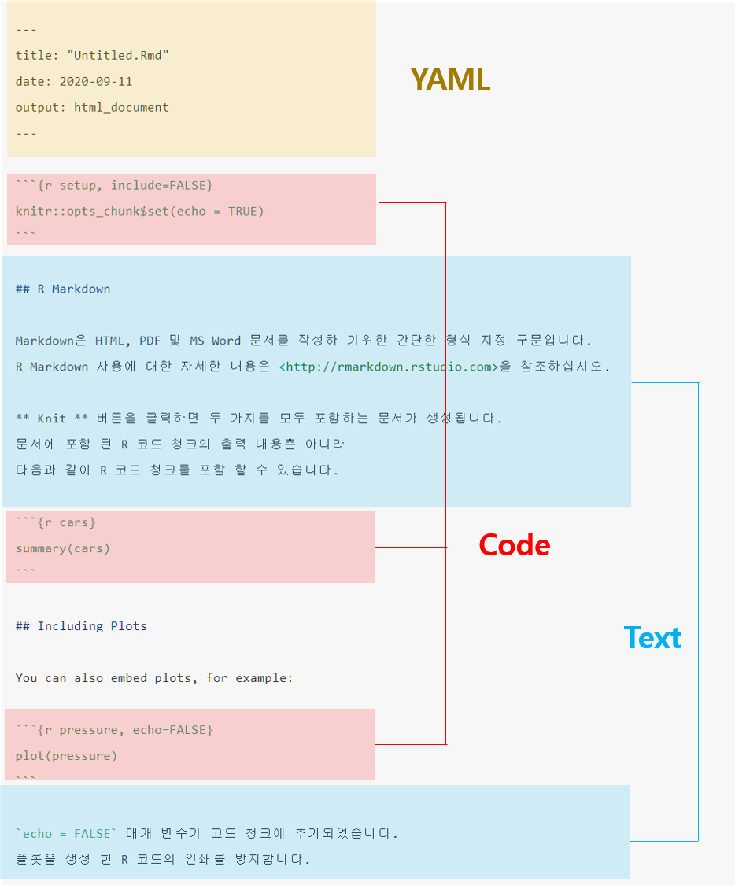

1.1 R Markdown의 구성
본 절의 내용 중 일부는 지난 학기 강의노트 1.7절과 중복되거나 재구성한 내용이 포함됨.
- R Markdown은 R 코드와 분석 결과(표, 그림 등)을 포함한 문서 또는 컨텐츠를 제작하는 도구로 일반적으로 아래 열거한 형태로 활용함
- 문서 또는 논문(
pdf,html,docx) - 프리젠테이션(
pdf,html,pptx) - 웹 또는 블로그
- 문서 또는 논문(
- 재현가능(reproducible)한 분석 및 연구1 가능
- 신뢰성 있는 문서 작성
Copy & paste를 하지 않고 효율적 작업 가능
R 마크다운 파일 =
.Rmd확장자를 가진 일반 텍스트 파일
---
title: "Untitled.Rmd"
date: "2020-09-11"
output: html_document
---
```{r setup, include=FALSE}
knitr::opts_chunk$set(echo = TRUE)
```
## R Markdown
Markdown은 HTML, PDF 및 MS Word 문서를 작성하 기위한 간단한 형식 지정 구문입니다.
R Markdown 사용에 대한 자세한 내용은 <http://rmarkdown.rstudio.com>을 참조하십시오.
**Knit** 버튼을 클릭하면 두 가지를 모두 포함하는 문서가 생성됩니다.
문서에 포함 된 R 코드 청크의 출력 내용뿐 아니라
다음과 같이 R 코드 청크를 포함 할 수 있습니다.
```{r cars}
summary(cars)
```
## Including Plots
You can also embed plots, for example:
```{r pressure, echo=FALSE}
plot(pressure)
```
`echo = FALSE` 매개 변수가 코드 청크에 추가되었습니다.
플롯을 생성 한 R 코드의 인쇄를 방지합니다.위 R Markdown 문서는 아래 그림과 같이 YAML, Markdown 텍스트, Code Chunk 세 부분으로 구성됨.

Figure 1.2: R markdown structure
YAML (YAML Ain’t Markup Language)
- R Markdown 문서의 metadata로 문서의 맨 처음에 항상 포함(header)되어야 함.
- R Markdown 문서의 최종 출력 형태(
html,pdf,docx,pptx등), 제목, 저자, 날짜 등의 정보 등을 포함
최종 문서 생성 과정
Rmd파일을knitr을 통해.md파일로 변환 후pandoc이라는 문서 변환기를 통해 원하는 문서 포맷으로 출력

Figure 1.3: R Markdown의 최종 결과물 산출과정(http://applied-r.com/project-reporting-template/)
과학적 연구의 결과물을 오픈소스로 내놓고 누구라도 검증 가능↩︎